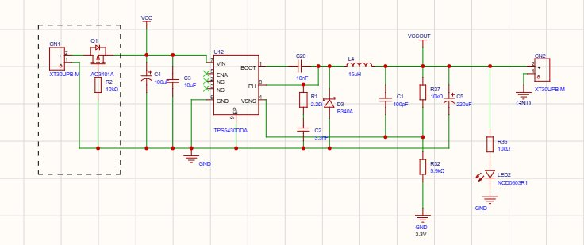
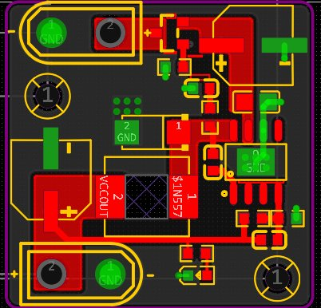
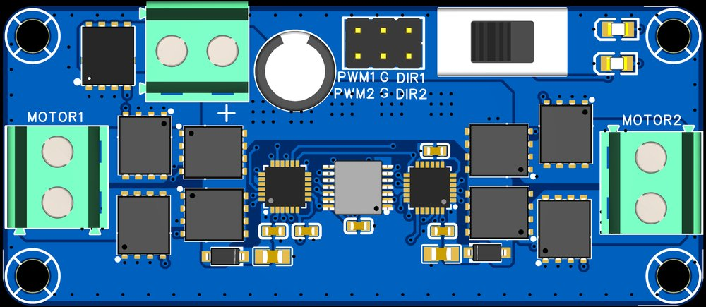
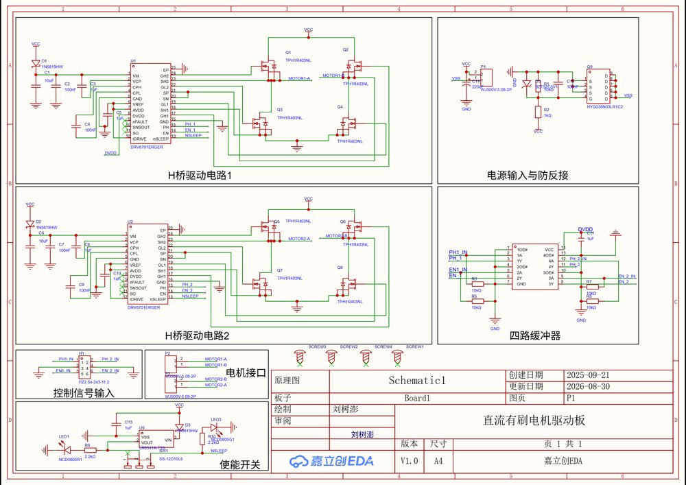
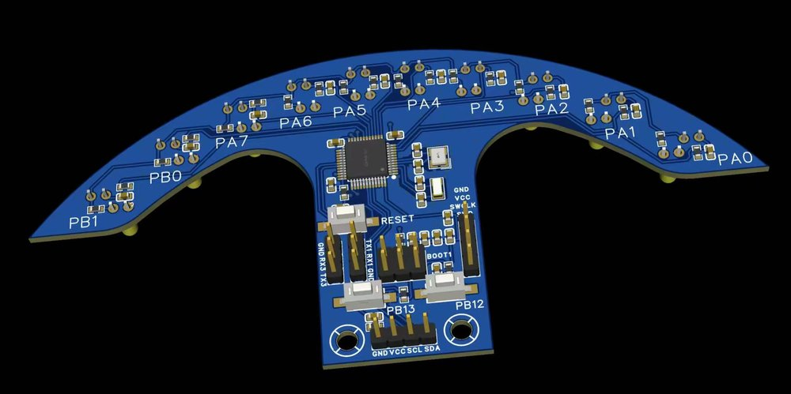
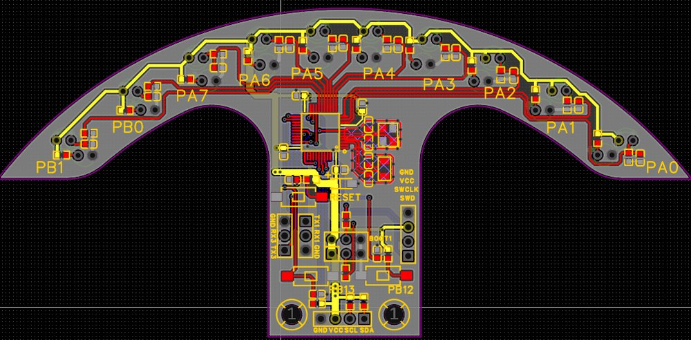
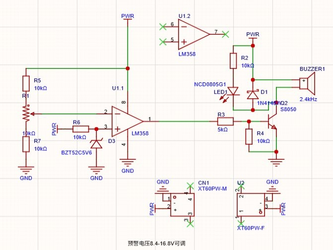
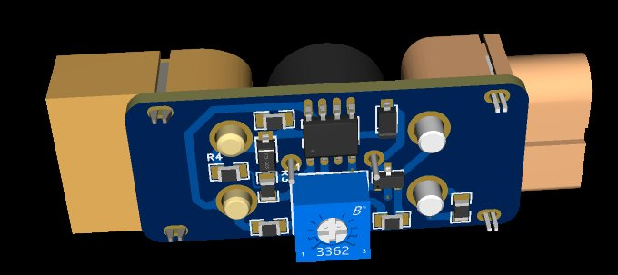

输入级采用 PMOS 防反接保护，以 TPS5430 为核心配合功率电感、续流肖特基二极管与输出电容构成完整 Buck 降压拓扑。使用示波器实测输出纹波与负载动态响应，观察开关节点振铃并定位干扰来源；通过开关节点增加 RC 吸收电路、反馈补偿网络引入前馈电容、缩小开关电流环路面积并保持地平面完整等措施，降低辐射与传导干扰，提升电源输出质量。


电源输入采用 PMOS 防反接；针对控制信号易受功率级干扰的问题，在信号输入端增加缓冲器进行隔离整形，防止功率级开关噪声回灌主控。以 DRV8701E 栅极驱动芯片配合外部 MOS 管搭建 H 桥（桥臂选用 TPH1R403），驱动能力可按电机需求灵活选配 MOS；MOS 管对称排布、功率回路短而宽，功率地与信号地分开走线。完成器件选型、原理图、PCB、打板、焊接与上电测试全流程，长时运行稳定无故障。


基于光电对管的十路灰度检测阵列，将路面反射光强转化为电压信号，实现赛道灰度多路同步检测。单片机 ADC 结合 DMA 机制高速采样转运，采样过程不占用 CPU，显著降低主控负载；通过 IIC 协议与主机通信，相比模拟量直传抗干扰能力更强、布线更简洁，为整车循迹控制提供低延迟、高精度的偏差数据。


使用运放 LM358 构建电压比较器，对电池分压信号实时监测；可调电阻设定预警阈值，适配不同规格航模电池。电压低于阈值时触发三极管饱和导通，驱动 LED 与蜂鸣器声光报警；针对电磁式蜂鸣器的感性特征，并联续流二极管吸收关断时的感生电动势，保护三极管不被击穿。响应快、成本低、可靠性高。

